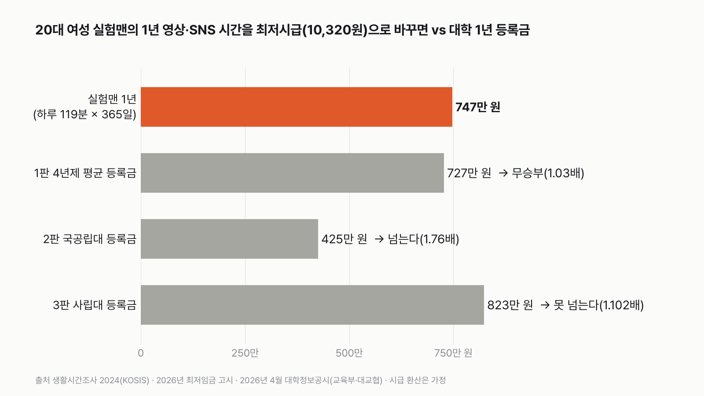
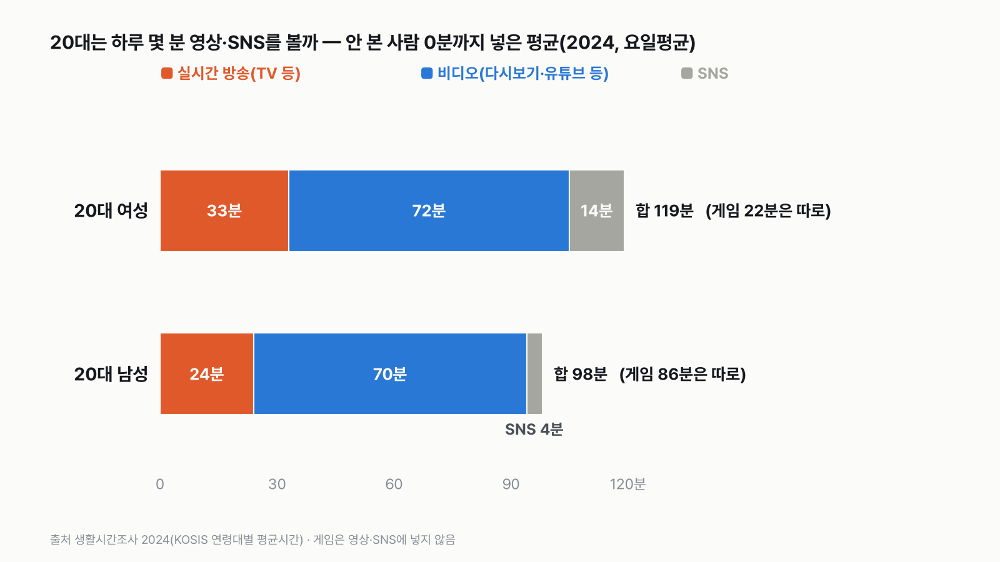
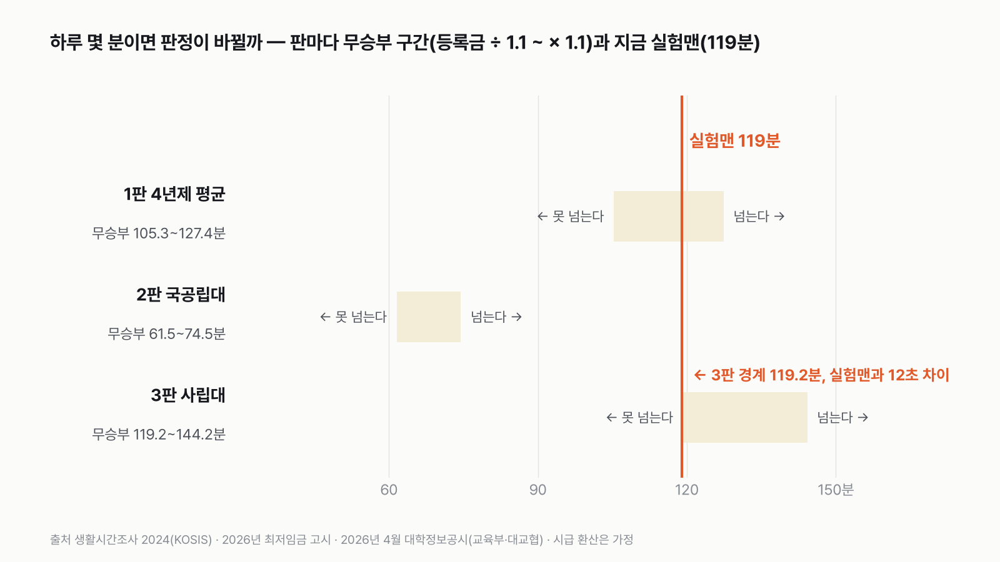

20대 여성 실험맨의 1년 영상·SNS 시간, 최저시급으로 치면 대학 등록금을 넘을까
하루 2시간이 1년이면 어떤 크기인지, 익숙한 고지서 한 장과 대 보는 거예요.
독자 투표
20대 여성 실험맨이 1년 동안 영상·SNS 보는 시간, 최저시급으로 치면 대학 1년 등록금을 넘을까?
- 20대 여성은 TV·유튜브 같은 영상과 SNS에 하루 평균 2시간 가까이 써요. 1년을 모으면 30일이 넘어요.
- 그 시간을 최저시급 알바 시간으로 바꾸면 얼마나 될까요? 대학 1년 등록금과 나란히 세워 봤어요.
- 4년제 평균, 국공립대, 사립대 세 가지 등록금과 세 판을 겨뤄요.
조건과 규칙
- 실험맨은 편마다 다른 평균 한국인으로 나서요. 이번엔 20대 여성이고, 같은 나이 남성도 같은 잣대로 재 봤어요.
- 실험맨은 20대(20~29세) 여성이에요. 대학생만이 아니라 20대 여성 전체의 평균이고, 그날 영상을 안 본 사람의 0분까지 넣었어요.
- 영상·SNS 시간은 생활시간조사 2024에서 잰 하루 평균(일주일 평균)이에요. 실시간 방송 시청(TV 등), 비디오 시청(다시보기·유튜브 같은 실시간이 아닌 영상), SNS를 통한 교제를 더해요. 인터넷 검색과 게임은 넣지 않아요.
- 잣대(가정): 1년 시간 × 2026년 최저시급 10,320원. 주휴수당은 넣지 않아요.
- 등록금은 2026년 4월 대학정보공시의 4년제 대학 학생 1인 연간 평균이에요.
- 1판 4년제 평균, 2판 국공립대, 3판 사립대 등록금과 겨뤄요.
- 판마다 큰 쪽이 1.1배 이상이면 승, 안 되면 무승부예요. 실험맨 금액이 크면 '넘는다', 등록금이 크면 '못 넘는다'예요.
- 20대 남성에게도 똑같은 잣대를 대 보지만 점수에는 넣지 않아요.
| 무엇 | 값 | 잰 것 / 가정 |
|---|---|---|
| 20대 여성 하루 영상·SNS | 실시간 방송 33분 + 비디오 72분 + SNS 14분 | 잰 것(생활시간조사 2024 시간일지) |
| 1년 = 365일 | 하루 분 × 365 | 가정(조사 주간의 평균이 1년 내내 같다) |
| 시간을 돈으로 | 최저시급 10,320원(2026) | 가정(영상 시간에 시급을 매긴 것) |
| 등록금 | 4년제 평균 727만 300원, 국공립 425만 원, 사립 823만 1,500원 | 잰 것(2026년 대학정보공시) |
결과 요약
3판 1승 1무 1패 → 최종 무승부
- 20대 여성 실험맨의 1년 영상·SNS 시간은 724시간이에요. 최저시급으로 치면 747만 원이에요.
- 4년제 평균 등록금(727만 원)과는 1.03배라 비겨요. 국공립대(425만 원)는 1.76배로 넘고, 사립대(823만 원)는 1.102배 차이로 못 넘어요.
- 하루 12초만 더 봤어도 3판은 비기고, 최종은 '넘는다'였어요. 거꾸로 하루 105분 이하였다면 1판도 져서 최종은 '못 넘는다'였어요.
투표엔 무승부 칸이 없었지만 승수가 1 대 1이라 어느 쪽 손도 못 들었어요.
그래서? 1년 동안 보는 영상·SNS를 최저시급으로 바꾸면, 대학 1년 등록금과 거의 같은 크기예요. 국공립대 등록금은 거뜬히 넘고, 사립대 등록금에는 한 끗 모자라요.
독자 예상 vs 데이터 결과
20대 여성 실험맨이 1년 동안 영상·SNS 보는 시간, 최저시급으로 치면 대학 1년 등록금을 넘을까?
데이터 결과: 무승부. 규칙상 비김(1승 1무 1패). 747만 원으로 4년제 평균 등록금 727만 원과 1.03배, 국공립대는 넘고 사립대는 1.102배 차이로 못 넘어요. 하루 12초만 더 봤어도 최종은 '넘는다'였어요.


숫자 두 개로 줄이면 이래요. 20대 여성 실험맨은 1년에 영상·SNS를 724시간, 24시간으로 치면 30일 넘게 봐요. 최저시급으로 바꾸면 747만 원, 4년제 대학 평균 등록금보다 20만 원 많아요.
| 판 | 실험맨(1년 × 최저시급) | 등록금 | 배수 | 판정 |
|---|---|---|---|---|
| 1판 4년제 평균 | 747만 원 | 727만 원 | 1.03배 | 무승부 |
| 2판 국공립대 | 747만 원 | 425만 원 | 1.76배 | 넘는다(실험맨 승) |
| 3판 사립대 | 747만 원 | 823만 원 | 1.102배 | 못 넘는다(등록금 승) |
| 최종 | 1승 1무 1패 → 무승부 |
판마다 큰 쪽을 작은 쪽으로 나눠서 1.1배 이상이면 승, 안 되면 무승부로 쳤어요. 이긴 폭은 따지지 않아요. 국공립대 판을 크게 이긴 것도, 사립대 판을 아슬아슬하게 진 것도 똑같이 1승, 1패예요.
1판 4년제 평균: 무승부(1.03배)
20대 여성의 하루 영상·SNS는 119분이에요. 365일을 곱하면 724시간, 최저시급 10,320원을 곱하면 747만 원이에요. 4년제 대학 192곳의 학생 1인 평균 등록금은 727만 300원이에요. 차이는 20만 원, 3%도 안 돼요. 규칙대로 비겼어요. 20만 원은 하루 약 3분 차이예요. 이 정도는 통계 반올림 안에서 왔다 갔다 해요.
2판 국공립대: 넘는다(1.76배)
국공립대 평균 등록금은 425만 원이에요. 사립대의 절반을 겨우 넘어요. 실험맨의 747만 원은 국공립대 등록금을 1.76배 넘어요. 하루 75분만 봐도 넘는다는 판정이 나와요. 지금 실험맨은 그보다 44분 넘게 더 봐요.
3판 사립대: 못 넘는다(1.102배, 아슬아슬)
사립대 평균 등록금은 823만 1,500원이에요. 실험맨 747만 원과는 1.102배 차이예요. 규칙의 1.1배를 아주 조금 넘어서 '못 넘는다'로 판정됐어요. 실험맨이 하루 119.2분만 봤다면 무승부였어요. 지금보다 하루 12초 더예요.
이 차이는 통계가 잴 수 있는 크기보다 작아요. 생활시간조사는 활동마다 분 단위로 반올림해서 내놓아요. 실시간 방송 33분, 비디오 72분, SNS 14분이 각각 반올림된 값이라, 실제 합은 117.5~120.5분 사이 어디일 수 있어요. 경계 119.2분이 이 범위 안에 들어가요. 그리고 이 12초는 3판 하나가 아니라 최종 판정까지 바꿔요. 3판이 비기면 1승 2무로 최종은 '넘는다'가 되고, 하루 105분 이하라면 1판까지 져서 1승 2패, '못 넘는다'가 돼요. 규칙대로 판정은 내렸지만, 이번 승부는 사실상 반올림 안에서 갈렸어요. 계산해 보고 저도 웃었어요. 12초 차이였어요.


영상 시간의 3분의 2는 '다시보기'
20대 여성의 119분 가운데 72분은 비디오 시청이에요. 실시간이 아닌 영상, 그러니까 유튜브나 OTT 다시보기 같은 것이에요. TV처럼 정해진 시간에 보는 실시간 방송은 33분이에요. 그날 비디오를 본 사람은 20대 여성 열 명 중 여섯이고, 본 사람만 따지면 하루 1시간 58분을 봐요.
남녀 차이는 SNS에서 나요
SNS로 사람과 이야기하고 소식을 주고받는 시간은 20대 여성이 하루 14분, 20대 남성이 4분이에요. 그날 SNS를 쓴 비율도 21%와 9%로 차이가 커요. 영상 시청은 남녀가 비슷해요. 비디오가 72분과 70분, 실시간 방송이 33분과 24분이에요.
같은 잣대를 20대 남성에게 대면: 등록금 승
20대 남성은 영상·SNS가 하루 98분이에요. 1년에 615만 원어치예요. 4년제 평균 등록금과 사립대 등록금에는 못 미치고, 국공립대만 넘어요. 1승 2패로 등록금이 이겨요. 그런데 20대 남성은 영상·SNS 말고 게임·놀이에 하루 86분을 써요. 20대 여성은 22분이에요. 게임과 인터넷 검색까지 넣으면 20대 남성은 하루 197분, 1년에 1,237만 원이에요. 20대 여성도 같은 방식으로 넣으면 하루 152분, 954만 원이에요. 둘 다 세 판을 모두 넘어요.
나이가 들면 영상이 TV로 옮겨 가요
30대 여성은 하루 104분이라 20대보다 적어요(1승 2패, 등록금 승). 그런데 19세 이상 여성 전체는 148분으로 20대보다 많아요. 이유는 TV예요. 19세 이상 여성의 실시간 방송 시청은 108분으로, 20대 여성 33분의 세 배가 넘어요. 거꾸로 비디오 시청은 36분으로 20대의 절반이에요. 같은 '영상'이라도 나이에 따라 화면이 달라져요.
주말에는 판이 기울어요
20대 여성의 영상·SNS는 평일 107분, 토요일 145분, 일요일 153분이에요. 평일만 1년 내내라면 4년제 평균 등록금과 0.92배로 여전히 비기고, 최종도 그대로 무승부예요. 토요일이나 일요일 같은 날이 1년 내내 이어진다면 사립대 등록금까지 넘어서 세 판을 모두 넘어요.


다르게 세면
| 바꾼 조건 | 하루 | 1년 금액 | 최종 |
|---|---|---|---|
| 기본(20대 여성, 2026 최저시급) | 119분 | 747만 원 | 1승 1무 1패, 무승부 |
| 시급을 2024년 9,860원(시간을 잰 해)으로 | 119분 | 714만 원 | 1승 1무 1패, 무승부 |
| 시급을 2025년 10,030원으로 | 119분 | 726만 원 | 1승 1무 1패, 무승부 |
| 주휴수당 넣은 시급(약 12,400원) | 119분 | 897만 원 | 2승 1무, 넘는다 |
| 인터넷 검색까지 넣으면 | 130분 | 816만 원 | 2승 1무, 넘는다 |
| 인터넷 검색·게임까지 넣으면(20대 여성) | 152분 | 954만 원 | 3승, 넘는다 |
| 20대 남성(같은 잣대) | 98분 | 615만 원 | 1승 2패, 못 넘는다 |
| 30대 여성(같은 잣대) | 104분 | 653만 원 | 1승 2패, 못 넘는다 |
| 19세 이상 여성(같은 잣대) | 148분 | 929만 원 | 3승, 넘는다 |
등록금 쪽을 바꿔도 결과가 갈려요. 인문사회 계열 평균(643만 원)과 비수도권 평균(662만 원), 전문대 평균(665만 원)은 넘어요. 의학 계열(1,033만 원)과 수도권 평균(827만 원, 1.107배로 아슬아슬)은 못 넘어요.
시급을 어느 해 값으로 잡아도 최종은 무승부예요. 시간을 잰 2024년 시급으로 바꾸면 1판이 0.98배로 등록금 쪽으로 기울지만, 여전히 비기는 범위예요. 결과를 가장 크게 흔드는 건 '무엇을 영상·SNS로 칠까'와 '누구의 하루냐'예요.
내 1년으로 바꿔 보면
하루 119분은 저녁 먹고 드라마 한 편 40분, 자기 전 유튜브 1시간 4분, 틈틈이 SNS 15분이면 채워져요. 한 번에 2시간을 보는 날은 드물어도, 조각조각 모으면 1년에 30일이 넘어요. 이 조사는 지하철에서 본 영상은 '이동'으로 세요. 그래서 출퇴근길 화면 시간은 이 119분에 들어 있지 않아요.
이 시간을 '버렸다'는 뜻은 아니에요
최저시급은 시간의 크기를 재는 자로 빌렸을 뿐이에요. 영상으로 쉬고, SNS로 친구와 이야기하는 시간도 하루의 일부예요. 이 글은 그 시간이 얼마나 큰지 재 본 것이지, 줄이라거나 늘리라는 이야기가 아니에요.
하루 1분을 1년 모으면 최저시급으로 6만 3천 원어치예요. 내 하루는 몇 분일까요?
같은 생활시간조사로 20대의 영상 시간이 5년 새 어떻게 바뀌었는지는 20대가 하루에 영상 보는 시간 글에서 볼 수 있어요.
이 숫자는 어디서 왔나요
출처
기준일 영상·SNS 시간은 2024년 생활시간조사 값이에요(KOSIS 표 마지막 변경 2025-07-23). 최저시급은 2026년 적용 값(2025-08-05 고시), 등록금은 2026학년도 값(2026-04-29 발표)이에요. KOSIS 값과 등록금 보도자료는 2026년 11월 9일에 받았어요. 조건은 2026년 11월 9일, 계산하기 전에 정했어요.
국가데이터처생활시간조사
고용노동부
- 2026년 적용 최저임금 고시(제2025-47호)
시간급 10,320원(2025년 10,030원, 2024년 9,860원은 비교)
교육부·한국대학교육협의회
- 2026년 4월 대학정보공시 분석 결과(2026-04-29)
4년제 평균·국공립·사립·수도권·비수도권·계열별·전문대 학생 1인 연간 평균 등록금
어떻게 셌나요
- 영상·SNS 시간: 생활시간조사 2024(국가데이터처), 연령대별 평균시간 표(KOSIS DT_1TS202004), 요일평균. 실시간 방송 시청(S824) + 비디오 시청(S825) + 사회관계망을 통한 교제(S714). 평균시간은 그날 하지 않은 사람의 0분까지 넣은 값이에요.
- 그날 한 사람의 비율과 한 사람만의 평균시간: 연령대별 행위자비율(DT_1TS202005), 행위자평균시간(DT_1TS202006). 활동마다 한 사람이 달라서 더하지 않았어요.
- 시급: 고용노동부 고시 제2025-47호, 2026년 적용 최저임금 시간급 10,320원.
- 등록금: 교육부·한국대학교육협의회 '2026년 4월 대학정보공시 분석 결과'(2026-04-29). 4년제 일반·교육대학 192곳, 학생 1인 연간 평균 등록금(학과·학년별 등록금 × 입학정원 가중). 4년제 평균 7,270.3천 원, 사립 8,231.5천 원, 국공립 4,250.0천 원, 수도권 8,270.0천 원, 비수도권 6,619.6천 원, 인문사회 6,433.7천 원, 의학 10,325.9천 원, 전문대 평균 6,653.1천 원.
- 판정 경계(하루 분): 등록금 ÷ (365 ÷ 60 × 10,320원)이 같아지는 분이에요. 4년제 평균은 115.8분, 국공립대 67.7분, 사립대 131.1분이에요. 무승부 구간은 그 1.1배 안쪽이라 4년제 평균 105.3~127.4분, 국공립대 61.5~74.5분, 사립대 119.2~144.2분이에요.
한계 6가지
이 데이터로 말할 수 없는 것
- 시간은 2024년, 시급과 등록금은 2026년 값이에요. 가장 최근 값끼리 맞췄어요. 시급을 2024년 값으로 바꿔도 최종은 같아요.
- 생활시간조사는 조사 기간에 쓴 시간일지예요. 그 평균이 1년 내내 같다고 가정했어요. 방학이나 휴가철은 따로 반영하지 않았어요.
- 실험맨은 20대 여성 전체예요. 대학생만 따로 본 값이 아니에요.
- 이 표는 주된 활동만 세요. 밥을 먹거나 이동하면서 본 영상은 '식사'나 '이동'으로 잡혀서 빠져요. 그래서 실제 화면 시간은 이보다 길 수 있어요.
- 활동별 분 값이 분 단위로 반올림되어 있어서 세 활동의 실제 합은 117.5~120.5분 사이일 수 있어요. 3판 경계(119.2분)가 이 안에 있어서, 반올림만으로 3판이 비기고 최종이 '넘는다'로 바뀔 수 있어요. 하루 105분 이하라면 최종은 '못 넘는다'예요.
- 최저시급으로 바꾸는 건 크기를 재기 위한 가정이에요. 영상 시청이 돈이 된다는 뜻이 아니에요.
다음 대결
대결 다 보기판다 vs 실험맨
판다 vs 실험맨, 다섯 판 승부로 하루에 '더 많이 먹는' 쪽은?
A판다vsB실험맨
투표하러 가기
대결실험맨투표했어요결과: 산다배달·외식비 vs 스마트폰
실험맨이 1년 동안 사 먹는 밥값(배달 포함)으로 최신 스마트폰을 살 수 있을까?
A산다vsB못 산다
투표하러 가기
대결실험맨투표했어요65세 이상 남성 승20대 여성 vs 65세 이상 남성
20대 여성 실험맨 vs 65세 이상 남성 실험맨, 네 판 승부로 하루 운동을 더 많이 하는 쪽은?
A20대 여성vsB65세 이상 남성
투표하러 가기
대결투표했어요짜장면 승짜장면 vs 치킨
짜장면 vs 치킨, 다섯 판 승부로 값이 더 많이 오른 국민 음식은?
A짜장면vsB치킨
투표하러 가기
대결실험맨투표했어요출퇴근 승출퇴근 vs 연차
실험맨이 1년 동안 출퇴근에 쓰는 시간과 연차 휴가로 쉬는 시간, 세 판 승부로 더 긴 쪽은?
A출퇴근vsB연차 휴가
투표하러 가기
대결투표했어요경복궁 승경복궁 vs 에버랜드
경복궁 vs 에버랜드, 다섯 판 승부로 1년에 사람이 더 많이 찾는 곳은?
A경복궁vsB에버랜드
투표하러 가기
대결투표했어요결과: 세계기록 사람마라톤 세계기록 vs 서울 버스
마라톤 세계기록 속도로 뛰는 사람 vs 서울 시내버스, 세 판 승부로 더 빠른 쪽은?
A세계기록 사람vsB서울 버스
투표하러 가기
대결실험맨투표했어요무승부실험맨 vs 수영장
실험맨 혼자 1년 쓴 수돗물로 25m 수영장 레인 한 줄을 채울 수 있을까?
A채운다vsB못 채운다
투표하러 가기
새 글 나오면 받아 보기
피드 리더 앱에 이 사이트 주소를 한 번 넣어 두면, 새 글이 올라올 때 앱에 떠요. 가입이나 메일 주소는 필요 없어요.
받는 법 보기
- 피드 리더 앱을 하나 골라요. 새 글을 모아 보여 주는 앱이에요. 예를 들면 Feedly나 Inoreader가 있어요. 둘 다 무료고 웹·휴대폰에서 써요.
- 앱에서 '구독 추가'(+)를 누르고 아래 주소를 붙여 넣어요.
- 끝이에요. 새 글이 올라오면 앱 목록에 떠요.
https://protofu.github.io/opendata-insight/feed.xmlFeedly를 쓴다면 여기를 눌러 바로 추가할 수도 있어요.